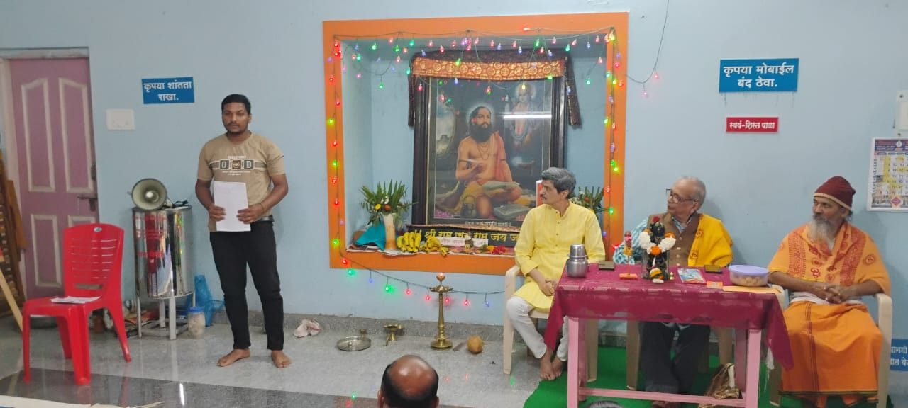
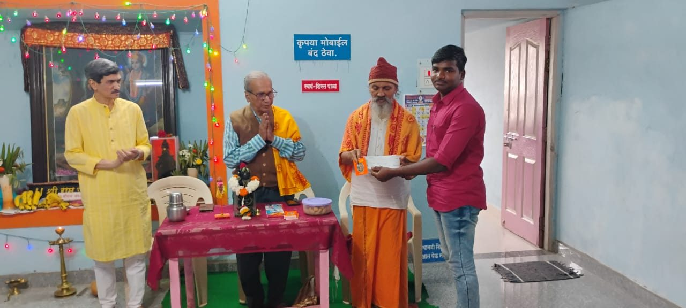
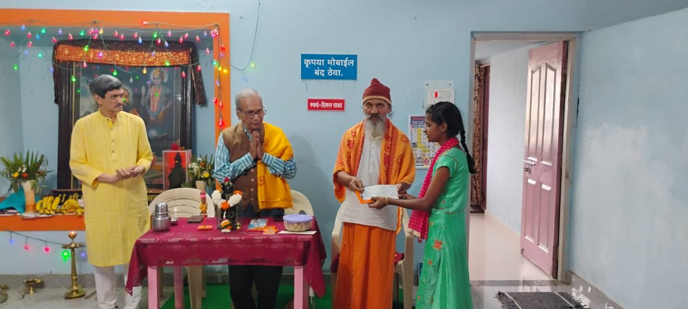

Activity Gallery
Photographs from our inaugural education-support activity, December 2025.



Like the banyan tree, ADHAR-VAD strives to create enduring support for deserving and needy members of society, helping them move towards dignity, independence and self-reliance.
Get Involved Learn MoreADHAR represents support and a place of trust, while VAD, the Banyan tree, represents continuous growth and the creation of enduring support for others.
Rooted in Bharatiya Sanskriti and the values of reverence, affection, faith, compassion and confidence, the Trust provides financial, emotional, moral and guidance-related support to deserving and needy persons, irrespective of age, gender, caste, religion or other social distinctions.

We turn our objectives into need-based support programmes.
Tuition-fee support for academically deserving students facing financial constraints.
Educational counselling, career guidance and mentoring for needy students.
Financial and advisory support for unsupported senior citizens and women.
Medical guidance and assistance for deserving and eligible beneficiaries.
Moral and emotional support to help individuals rebuild and rehabilitate.
Support for deserving individuals with no reliable support, in exceptional circumstances.

In December 2025 the Trust undertook its first charitable activity: educational assistance for deserving students facing financial constraints.
Retired teacher Mr. Kulkarni recommended 12 to 15 students. Trustees Adv. Ajay Shah and Mr. Vishal Joshi interviewed each of them personally, and five students studying Engineering, Polytechnic, Pharmacy and Nursing were selected for support.
Photographs from our inaugural education-support activity, December 2025.

Teachers, professionals, volunteers and well-wishers can help us find the people who need support and give it to them. Join our community network or support our work.
Contact Us